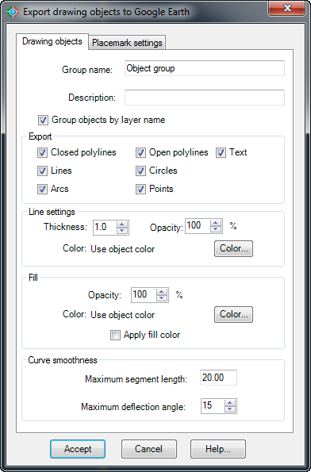
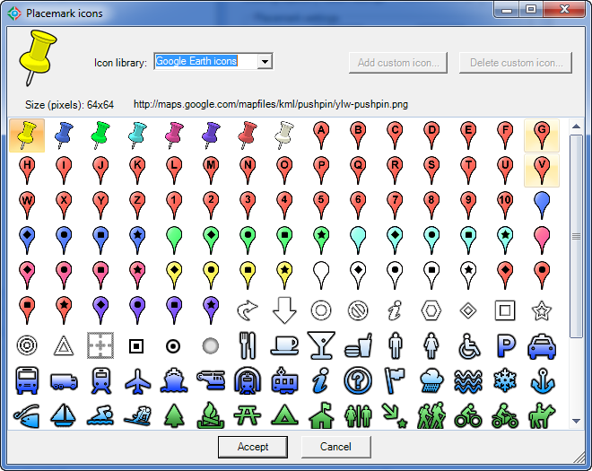

|
|
Toolbar:
Menu: CAD-Earth > Export CAD objects to Google Earth
|
|
|
Command line: CE_EXPGEOBJ
Prompts:
Select objects:
CAD-Earth version: Basic, Plus, Premium. |
.png)
.png)
Command description:
Lines, polylines, arcs, circles and points can be exported to Google Earth as polygons, routes or placemarks. Object line thickness, outline, fill color and opacity can be adjusted. Curve smoothness can be controlled by specifying the maximum segment length and deflection angle. Placemark name, description, scale and icon can also be set.
Export drawing objects to Google Earth (Drawing objects tab):

Export drawing objects to Google Earth (Drawing objects tab)
ØGroup name. Text entered will be shown as the name of the folder containing the exported objects.
ØGroup description. Text entered will be shown as the description of the folder containing the exported objects.
ØGroup objects by layer name. Entities selected will be grouped by layer name and a folder will be created in the Google Earth Places Explorer for each group containing the corresponding entities.
ØExport.
•Closed polylines. Choose to export closed polylines as polygons in Google Earth.
•Open polylines. Choose to export open polylines as routes in Google Earth.
•Lines. Choose to export lines as routes in Google Earth.
•Circles. Choose to export circles as polygons in Google Earth.
•Arcs. Choose to export arcs as routes in Google Earth.
•Points. Choose to export points as placemarks in Google Earth.
ØLine settings.
•Thickness. Values for line thickness of exported objects can be from 0 to 100 pixels.
•Opacity. Values for line opacity of exported objects can be between 0% (line completely invisible) and 100% (line completely visible)
•Color. Objects can be exported to Google Earth with the same color they have in AutoCAD, using the current color, or with a different color selected by the user.
ØFill.
•Opacity. Closed polylines and circles can be exported to Google Earth with fill opacity ranging from 100% (completely visible) to 0% (completely invisible).
•Color. Closed polylines and circles can be exported to Google Earth with the same fill color they have in AutoCAD, using the current color, or with a different color selected by the user.
•Apply fill color. Choose this option is you wish to apply fill to exported objects such as closed polylines and circles.
ØCurve smoothness. Arcs, circles, and polylines with curved segments will be converted to straight segments before exporting. The number of resulting segments will be proportional to the maximum segment length and the maximum deflection angle between consecutive segments specified.
Export drawing objects to Google Earth (Placemark settings tab):

Export drawing objects to Google Earth (Placemark settings tab)
•Scale. You can set a scale from 0 to 100 for placemark icons.
•Opacity. Values can be from 100% (completely visible) to 0% (invisible) for placemark icons.
•Offset insertion point. You can set a displacement distance in the horizontal (X) and vertical (Y) for points exported to Google Earth.
•Color. Exported points can be added to Google Earth as placemarks with the same color they have in AutoCAD, using the current color or applying a different color selected by the user.
•Select point icon. You can choose the icon that will be used for exported points as placemarks in Google Earth. Available Icon libraries are: Google Earth Icons, CAD point icons and custom icons. The Google Earth icon library contains the same default icons used by Google Earth. The CAD point icon library contains symbols used for points in AutoCAD. If you select the custom icon library, the Add and Delete custom icon will be enabled, and you can select an image file to include in the library or remove a selected icon from the library.

Dialog box to select placemark icons.
ØPlacemark tag settings.
•Scale. You can set a scale from 0 to 100 for placemark tags.
•Opacity. Values can range from 100% (completely visible) to 0% (invisible) for placemark tags.
•Color. Placemark tags can have the same color as point objects in AutoCAD, as the current color or as a different color selected by the user.
•Set placemark name same as point handle. Placemark names will be the handle of the corresponding points. A handle is a unique identifier for each object in AutoCAD.
•Set name and description for all placemarks. The same name and description will be used to identify all resulting placemarks.
•Name. Will be used as a placemark tag and as the name of the corresponding placemark nodes in the Google Earth Places Explorer.
•Description. Information typed here will be displayed as description in all exported placemark nodes.
Tips:
•Before using this command the current drawing must be georeferenced to establish the conversion parameters between the drawing and the latitude/longitude coordinates of the corresponding site.
•Once you export the object to Google Earth, you can save them to a KML or KMZ file right-clicking on the corresponding node and selecting 'Save Place As...' from the Google Earth context menu.
Related topics:
•Import objects from Google Earth.
•Georeference drawing selecting objects
•Georeference drawing selecting two points
•Georeference drawing by selecting a coordinate system
Copyright © 2023 Arqcom Software
Google Earth© is a registered trademark of Google inc. All other trademarks are the property of their respective owners.